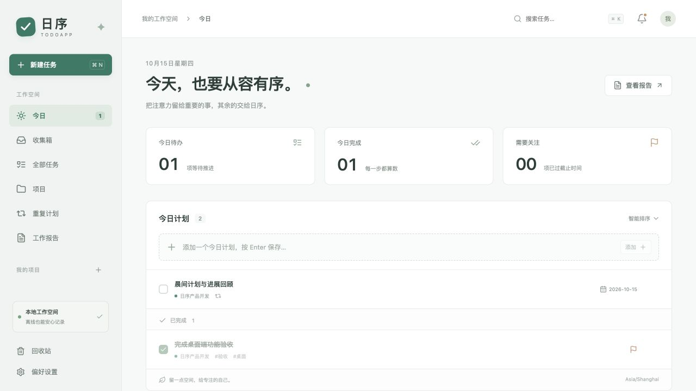

先记下来，
让大脑轻一点。
用项目、标签和优先级整理待办。今天要做什么，下一步做什么，都有自己的位置。
一个轻一点的桌面工作伙伴
LESS TO MANAGE, MORE TO DO
从一个念头，到一份有迹可循的进展。
时笺把记录、提醒和复盘，放在一起。
用项目、标签和优先级整理待办。今天要做什么，下一步做什么，都有自己的位置。
固定时间、截止前提醒和每日摘要。配合免打扰时间，让提醒跟上你的节奏。
根据任务记录自动生成日报、周报和月报。补充自己的思考，确认保存，导出 Markdown。
A QUIET PLACE TO FOCUS
v0.1.0 历史界面 · 旧名称「日序」

MAKE ROOM FOR YOUR DAY
不用在多个工具间来回切换。
给每个时刻，刚刚好的支持。
打开今日计划，选出重要的事。每日摘要帮助你进入工作状态。
及时记录进展和阻塞，让提醒照看时间，把注意力留给当下。
查看自动汇总的报告，补充感想与计划，让明天有一个清晰的开始。
以上时间为场景示例，提醒与报告生成时间均可在应用内设置。后台调度需要应用保持运行。
START SMALL. START TODAY.
从记下第一件小事开始。
时笺，陪你一步一步来。
SHARE A LITTLE ORDER
4 张 1080 × 1920 竖版图片，附 20 秒短视频分镜和配文。适合封面、图文和剪辑素材。
GOOD TO KNOW
不需要。当前版本无需账户，任务、提醒和报告的核心功能都可以离线使用，数据保存在本机。
当前版本使用本地模板，按任务完成、进展与阻塞等记录生成日报、周报和月报，支持人工补充。可选 AI 润色尚未接入。
关闭窗口后应用保留在托盘，可继续调度提醒。完全退出应用后，后台调度会停止。通知需要系统授权，也会受系统专注模式影响。
在「偏好设置 → 数据与隐私」导出备份，再在新电脑上恢复。时笺会在恢复前备份当前数据。首版没有多设备云同步。
打开 DMG，将 TodoApp 拖入「应用程序」。此体验版未签名、公证；如果系统阻止打开，请先核对下载来源和校验文件，再通过 macOS「系统设置 → 隐私与安全性」查看允许打开选项。当前安装包仅在 Intel Mac 验证。